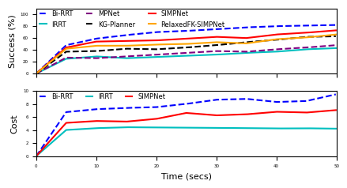

Workspaces
Type of workspaces used for training and evaluation of SIMPNet (i.e., simple and complex).

A brief video introduction of SIMPNet.
We use graph neural networks (GNNs) to incorporate the structure of the robotic manipulator's kinematic chain into our proposed sampling heuristic. This approach makes our planner aware of the manipulator's articulated structure. We also use an attention mechanism to condition the planning problem on workspace embeddings, given different dimensions of configuration space and workspace in robotic manipulators.

Schematic of spatial-informed sampling heuristic within SIMPNet.
We build a graph that implicitly mimics the kinematic chain of the robotic manipulator.

Type of workspaces used for training and evaluation of SIMPNet (i.e., simple and complex).
As a byproduct of our method, we can also solve the matting problem by ignoring samples that fall outside of a bounding box during rendering.
We can also animate the scene by interpolating the deformation latent codes of two input frames. Use the slider here to linearly interpolate between the left frame and the right frame.

Start Frame

End Frame
Using Nerfies, you can re-render a video from a novel viewpoint such as a stabilized camera by playing back the training deformations.
There's a lot of excellent work that was introduced around the same time as ours.
Progressive Encoding for Neural Optimization introduces an idea similar to our windowed position encoding for coarse-to-fine optimization.
D-NeRF and NR-NeRF both use deformation fields to model non-rigid scenes.
Some works model videos with a NeRF by directly modulating the density, such as Video-NeRF, NSFF, and DyNeRF
There are probably many more by the time you are reading this. Check out Frank Dellart's survey on recent NeRF papers, and Yen-Chen Lin's curated list of NeRF papers.
@article{park2021nerfies,
author = {Park, Keunhong and Sinha, Utkarsh and Barron, Jonathan T. and Bouaziz, Sofien and Goldman, Dan B and Seitz, Steven M. and Martin-Brualla, Ricardo},
title = {Nerfies: Deformable Neural Radiance Fields},
journal = {ICCV},
year = {2021},
}